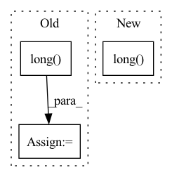

Pattern ID :1237
Before Change
preds_ = torch.transpose(preds, 1, 2)
//print(preds.size())
y = y.long()
loss = self.Loss(preds_, torch.squeeze(y))
return preds, loss
return preds
After Change
preds = self.Linear(hs.contiguous().view(x.size(0), -1))
preds_.append(preds)
if y is not None:
loss+=self.Loss(preds, y[:,i].squeeze().long() )
preds_ = torch.stack(preds_, dim = 1)
if y is not None:
loss/=len(xs)In pattern: SUPERPATTERN
Frequency: 3
Non-data size: 3
Instances Fragment ID: 3674728
Project Name: dido1998/recurrent-independent-mechanisms
Commit Name: d87a800096eaa36730cbabac535eea24973f3799
Time: 2020-02-11
Author: adidolkar123@gmail.com
File Name: networks.py
M Class Name: CopyingModel
N Class Name: CopyingModel
M Method Name: forward(5)
N Method Name: forward(5)
M Parent Class: nn.Module
N Parent Class: nn.Module
M File Name: networks.py
N File Name: networks.py
M Start Line: 255
M End Line: 276
N Start Line: 291
N End Line: 313
Before Change
// 该一步主要是获取sample_roi中每个roi所对应的修正系数loc.当然,正样本和负样本所获取的loc情况是不同的
// 正样本:某个roi中类别概率最大的那个类别的loc;负样本:永远是第1个loc(背景类 index为0)
head_loc = head_loc[torch.arange(n_sample).long().cuda(), at.totensor(gt_head_label).long()]
gt_head_label = at.totensor(gt_head_label).long()
gt_head_loc = at.totensor(gt_head_loc)
// 开始计算ROI_head网络的定位与分类损失
roi_loc_loss = _fast_rcnn_loc_loss(head_loc, gt_head_loc, gt_head_label, self.roi_sigma)
roi_cls_loss = F.cross_entropy(head_score, gt_head_label.cuda())After Change
head_loc = head_loc.reshape(n_sample, -1, 4) // torch.Size([128, self.n_class, 4])
// 该一步主要是获取sample_roi中每个roi所对应的修正系数loc.当然,正样本和负样本所获取的loc情况是不同的
// 正样本:某个roi中类别概率最大的那个类别的loc;负样本:永远是第1个loc(背景类 index为0)
gt_head_label = gt_head_label.long()
head_loc = head_loc[torch.arange(n_sample).long().cuda(), gt_head_label]
// 开始计算ROI_head网络的定位与分类损失
roi_loc_loss = _fast_rcnn_loc_loss(head_loc, gt_head_loc, gt_head_label, self.roi_sigma)
roi_cls_loss = F.cross_entropy(head_score, gt_head_label.cuda()) Fragment ID: 3674730
Project Name: pangkun248/faster-rcnn-pytorch
Commit Name: 95448f1e35fae9a59283fe2fb472492e29bc7bab
Time: 2021-08-30
Author: 39581901+pangkun248@users.noreply.github.com
File Name: model.py
M Class Name: FasterRCNN
N Class Name: FasterRCNN
M Method Name: forward(6)
N Method Name: forward(6)
M Parent Class: nn.Module
N Parent Class: nn.Module
M File Name: model.py
N File Name: model.py
M Start Line: 118
M End Line: 120
N Start Line: 112
N End Line: 113
Before Change
no_target_location_mask = ~target_location_mask.squeeze(dim=1)
//target_location = target_location * target_location_mask.long()
target_location = target_location.long()
target_location[no_target_location_mask] = torch.tensor([self.output_map_size - 1, self.output_map_size - 1], device=device)
return target_location_logits, target_location
After Change
// below is right! so the location point map to the point in the matrix!
target_location[i] = np.array([target_location_x.item(), target_location_y.item()])
target_location = torch.tensor(target_location, device=device).long()
target_location[no_target_location_mask] = torch.tensor([self.output_map_size - 1, self.output_map_size - 1], device=device)
print("target_location", target_location) if debug else None
Fragment ID: 3674733
Project Name: liuruoze/mini-alphastar
Commit Name: 52627be7e5ed623dca90047d1756fb71d839811c
Time: 2021-12-01
Author: liuruoze@163.com
File Name: alphastarmini/core/arch/location_head.py
M Class Name: LocationHead
N Class Name: LocationHead
M Method Name: forward(5)
N Method Name: forward(5)
M Parent Class: nn.Module
N Parent Class: nn.Module
M File Name: alphastarmini/core/arch/location_head.py
N File Name: alphastarmini/core/arch/location_head.py
M Start Line: 283
M End Line: 313
N Start Line: 277
N End Line: 309